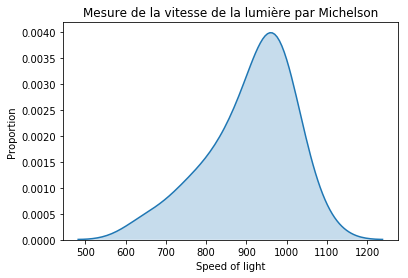
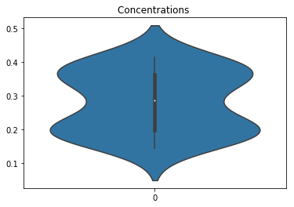
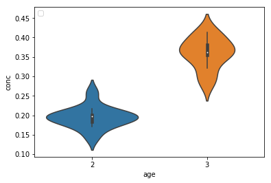
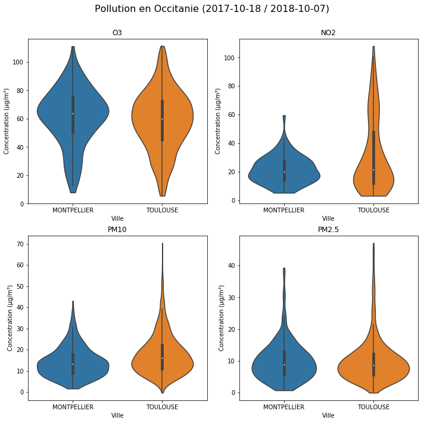
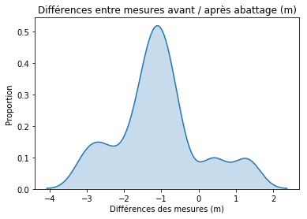

import numpy as np
import pandas as pd
import matplotlib.pylab as plt
import seaborn as snsTP3 - HMLA408: Joseph Salmon
Question: importer la fonction chisquare
from scipy.stats import chisquare, norm, shapiro, poisson, chi2, chi2_contingency, ttest_1samp, t, f, ttest_ind,ttest_rel, levene, bartlettfrom download import download
url = "http://josephsalmon.eu/enseignement/datasets/michelson.txt"
path_target = "datasets/michelson.txt"
download(url, path_target, replace=False)Replace is False and data exists, so doing nothing. Use replace==True to re-download the data.'datasets/michelson.txt'df_michelson = pd.read_csv("datasets/michelson.txt", sep='\s+') # \s+ : for hanlding spaces
df_michelson.head(n=10) # df stands for Data Frame| speed | |
|---|---|
| 0 | 850 |
| 1 | 740 |
| 2 | 900 |
| 3 | 1070 |
| 4 | 930 |
| 5 | 850 |
| 6 | 950 |
| 7 | 980 |
| 8 | 980 |
| 9 | 880 |
plt.figure()
ax = sns.kdeplot(df_michelson['speed'], shade=True)
plt.xlabel('Speed of light')
plt.ylabel('Proportion')
ax.legend().set_visible(False)
plt.title("Mesure de la vitesse de la lumière par Michelson")/home/jo/anaconda3/lib/python3.6/site-packages/scipy/stats/stats.py:1713: FutureWarning: Using a non-tuple sequence for multidimensional indexing is deprecated; use `arr[tuple(seq)]` instead of `arr[seq]`. In the future this will be interpreted as an array index, `arr[np.array(seq)]`, which will result either in an error or a different result.
return np.add.reduce(sorted[indexer] * weights, axis=axis) / sumvalText(0.5,1,'Mesure de la vitesse de la lumière par Michelson')
sigma = 105
mu = df_michelson['speed'].mean()
n_samples = df_michelson['speed'].count()mu0 = 990df_michelson['speed'].std()104.92603911427577n_samples20np.abs((mu-mu0)/ (sigma / np.sqrt(n_samples)))3.4499334509996755 2- 2 * norm.cdf(np.abs((mu-mu0)/ (sigma / np.sqrt(n_samples))))0.0005607247626622236ttest_1samp(df_michelson['speed'], mu0)Ttest_1sampResult(statistic=-3.4523652604521198, pvalue=0.0026685840985367784)df_michelson['true-speed'] = df_michelson['speed'] + 299000
ttest_1samp(df_michelson['true-speed'], mu0 + 299000)
# good news ca ne change rien!Ttest_1sampResult(statistic=-3.4523652604521198, pvalue=0.0026685840985367784)IC
alpha = 0.05
IC = np.array([mu - norm.ppf(1-alpha/2) * (sigma / np.sqrt(n_samples)),
mu + norm.ppf(1-alpha/2) * (sigma / np.sqrt(n_samples))])ICarray([862.98256662, 955.01743338])alpha = 0.1
IC = np.array([mu - norm.ppf(1 - alpha / 2) * (sigma / np.sqrt(n_samples)),
mu + norm.ppf(1 - alpha / 2) * (sigma / np.sqrt(n_samples))])ICarray([870.38095251, 947.61904749])alpha = 0.05
IC = np.array([mu - t.ppf(1 - alpha / 2, n_samples - 1) * (df_michelson['speed'].std() / np.sqrt(n_samples)),
mu + t.ppf(1 - alpha / 2, n_samples - 1) * (df_michelson['speed'].std() / np.sqrt(n_samples))])
ICarray([859.89310209, 958.10689791])alpha = 0.10
IC = np.array([mu - t.ppf(1 - alpha / 2, n_samples - 1) * (df_michelson['speed'].std() / np.sqrt(n_samples)),
mu + t.ppf(1 - alpha / 2, n_samples - 1) * (df_michelson['speed'].std() / np.sqrt(n_samples))])
ICarray([868.43078233, 949.56921767])Brochets et concentration de polluants
from download import download
url = "http://josephsalmon.eu/enseignement/datasets/brochet2.dat"
path_target = "datasets/brochet2.dat"
download(url, path_target, replace=False)Replace is False and data exists, so doing nothing. Use replace==True to re-download the data.'datasets/brochet2.dat'df_brochets = pd.read_csv('datasets/brochet2.dat',sep = '\s+') # XXX explain \s+df_brochets['age'] = df_brochets['age'].replace("deux_ans", 2)
df_brochets['age'] = df_brochets['age'].replace("trois_ans", 3)df_brochets.head()| conc | age | |
|---|---|---|
| 0 | 0.144 | 2 |
| 1 | 0.171 | 2 |
| 2 | 0.178 | 2 |
| 3 | 0.184 | 2 |
| 4 | 0.193 | 2 |
df_brochets.query('age==2')['conc'].describe()count 12.000000
mean 0.195250
std 0.027247
min 0.144000
25% 0.182500
50% 0.197500
75% 0.200750
max 0.258000
Name: conc, dtype: float64df_brochets.query('age==2').describe()| conc | age | |
|---|---|---|
| count | 12.000000 | 12.0 |
| mean | 0.195250 | 2.0 |
| std | 0.027247 | 0.0 |
| min | 0.144000 | 2.0 |
| 25% | 0.182500 | 2.0 |
| 50% | 0.197500 | 2.0 |
| 75% | 0.200750 | 2.0 |
| max | 0.258000 | 2.0 |
df_brochets.query('age==3')['conc'].describe()count 13.000000
mean 0.359923
std 0.039738
min 0.285000
25% 0.354000
50% 0.362000
75% 0.382000
max 0.413000
Name: conc, dtype: float64df_brochets.query('age==3').describe()| conc | age | |
|---|---|---|
| count | 13.000000 | 13.0 |
| mean | 0.359923 | 3.0 |
| std | 0.039738 | 0.0 |
| min | 0.285000 | 3.0 |
| 25% | 0.354000 | 3.0 |
| 50% | 0.362000 | 3.0 |
| 75% | 0.382000 | 3.0 |
| max | 0.413000 | 3.0 |
plt.figure()
sns.violinplot(data=df_brochets['conc'],orient='v')
plt.title("Concentrations ")/home/jo/anaconda3/lib/python3.6/site-packages/scipy/stats/stats.py:1713: FutureWarning: Using a non-tuple sequence for multidimensional indexing is deprecated; use `arr[tuple(seq)]` instead of `arr[seq]`. In the future this will be interpreted as an array index, `arr[np.array(seq)]`, which will result either in an error or a different result.
return np.add.reduce(sorted[indexer] * weights, axis=axis) / sumvalText(0.5,1,'Concentrations ')
sns.violinplot?plt.figure()
sns.violinplot(x='age', y='conc', data=df_brochets, orient='v')
plt.legend(loc='upper left')/home/jo/anaconda3/lib/python3.6/site-packages/scipy/stats/stats.py:1713: FutureWarning: Using a non-tuple sequence for multidimensional indexing is deprecated; use `arr[tuple(seq)]` instead of `arr[seq]`. In the future this will be interpreted as an array index, `arr[np.array(seq)]`, which will result either in an error or a different result.
return np.add.reduce(sorted[indexer] * weights, axis=axis) / sumval
No handles with labels found to put in legend.
X2 = df_brochets.query('age==2')['conc']
X3 = df_brochets.query('age==3')['conc']ttest_ind?ttest_ind(a=X2,b=X3, equal_var = False) # rejet donc pval tellement petite...Ttest_indResult(statistic=-12.161924260743977, pvalue=4.696819789876163e-11)levene(X2, X3) # rejet donc pval tellement petite...LeveneResult(statistic=1.2685084379364857, pvalue=0.2716614974618714)bartlett(X2, X3) # rejet donc pval tellement petite...BartlettResult(statistic=1.5144265025677355, pvalue=0.21846488186226679)fdistribution = f(len(X2) - 1, len(X3) - 1) # build an F-distribution object
fstatistics = np.var(X2, ddof=1) / np.var(X3, ddof=1)
p_value = 2 * min(fdistribution.cdf(fstatistics),
1 - fdistribution.cdf(fstatistics))
p_value0.22175826607655053import rpy2.robjects as robjects
def Ftest_pvalue_rpy2(d1,d2):
"""docstring for Ftest_pvalue_rpy2"""
rd1 = (robjects.FloatVector(d1))
rd2 = (robjects.FloatVector(d2))
rvtest = robjects.r['var.test']
return rvtest(rd1,rd2)[2][0]Ftest_pvalue_rpy2(X2,X3)0.22175826607655033# XXX todo : unilatéral...ttest_ind(a=X2, b=X3, equal_var = True) # rejet donc pvalue tellement petite...Ttest_indResult(statistic=-11.980435981106135, pvalue=2.2833306618065592e-11)Pollution en Occitanie
Mesures de pollution prise entre le 2017-10-18 et le 2018-10-07 sur différentes villes d’Occitanie. Plus d’information disponible sur le site: http://data-atmo-occitanie.opendata.arcgis.com/datasets/047b4d01a64943cb8a648aaf9b58307b_0 d’où ces données sont extraites.
url = "http://josephsalmon.eu/enseignement/datasets/Mesure_journaliere_Region_Occitanie_Polluants_Principaux.csv"
path_target = "datasets/Mesure_journaliere_Region_Occitanie_Polluants_Principaux.csv"
download(url, path_target, replace=False)Replace is False and data exists, so doing nothing. Use replace==True to re-download the data.'datasets/Mesure_journaliere_Region_Occitanie_Polluants_Principaux.csv'df_pol_occ = pd.read_csv(path_target).sort_values('nom_com', axis=0, ascending=True)
df_pol_occ.head(5)| X | Y | id | nom_dep | nom_com | code_insee | nom_station | code_station | typologie | influence | ... | metrique | date_debut | date_fin | statut_valid | x_l93 | y_l93 | x_wgs84 | y_wgs84 | geom | FID | |
|---|---|---|---|---|---|---|---|---|---|---|---|---|---|---|---|---|---|---|---|---|---|
| 14528 | 3.50483 | 43.2878 | 16721 | HERAULT | AGDE | 34003 | Agathois-Piscénois - Périurbain | FR08022 | suburban | Fond | ... | journaliere | 2018-10-02T01:00:00.000Z | 2018-10-03T00:00:00.000Z | t | 740996 | 6243310 | 3.50483 | 43.2878 | 0101000020E6100000000000E0E4090C4000000040D5A4... | 16721 |
| 15129 | 3.50483 | 43.2878 | 14322 | HERAULT | AGDE | 34003 | Agathois-Piscénois - Périurbain | FR08022 | suburban | Fond | ... | journaliere | 2018-09-07T01:00:00.000Z | 2018-09-08T00:00:00.000Z | t | 740996 | 6243310 | 3.50483 | 43.2878 | 0101000020E6100000000000E0E4090C4000000040D5A4... | 14322 |
| 6006 | 3.50483 | 43.2878 | 15007 | HERAULT | AGDE | 34003 | Agathois-Piscénois - Périurbain | FR08022 | suburban | Fond | ... | journaliere | 2018-09-14T01:00:00.000Z | 2018-09-15T00:00:00.000Z | t | 740996 | 6243310 | 3.50483 | 43.2878 | 0101000020E6100000000000E0E4090C4000000040D5A4... | 15007 |
| 5999 | 3.50483 | 43.2878 | 3000 | HERAULT | AGDE | 34003 | Agathois-Piscénois - Périurbain | FR08022 | suburban | Fond | ... | journaliere | 2018-05-27T01:00:00.000Z | 2018-05-28T00:00:00.000Z | t | 740996 | 6243310 | 3.50483 | 43.2878 | 0101000020E6100000000000E0E4090C4000000040D5A4... | 3000 |
| 15094 | 3.50483 | 43.2878 | 14287 | HERAULT | AGDE | 34003 | Agathois-Piscénois - Périurbain | FR08022 | suburban | Fond | ... | journaliere | 2018-09-06T01:00:00.000Z | 2018-09-07T00:00:00.000Z | t | 740996 | 6243310 | 3.50483 | 43.2878 | 0101000020E6100000000000E0E4090C4000000040D5A4... | 14287 |
5 rows × 24 columns
df_pol_occ.tail(5)| X | Y | id | nom_dep | nom_com | code_insee | nom_station | code_station | typologie | influence | ... | metrique | date_debut | date_fin | statut_valid | x_l93 | y_l93 | x_wgs84 | y_wgs84 | geom | FID | |
|---|---|---|---|---|---|---|---|---|---|---|---|---|---|---|---|---|---|---|---|---|---|
| 11766 | 1.39326 | 43.5616 | 8767 | HAUTE-GARONNE | TOULOUSE | 31555 | Toulouse-SETMI Eisenhower \n | FR12039 | urban | Industrielle | ... | journaliere | 2017-12-02T01:00:00.000Z | 2017-12-03T00:00:00.000Z | t | 570147 | 6274930 | 1.39326 | 43.5616 | 0101000020E610000000000000CB4AF63F000000E0E1C7... | 8767 |
| 11765 | 1.39326 | 43.5616 | 8766 | HAUTE-GARONNE | TOULOUSE | 31555 | Toulouse-SETMI Eisenhower \n | FR12039 | urban | Industrielle | ... | journaliere | 2017-12-01T01:00:00.000Z | 2017-12-02T00:00:00.000Z | t | 570147 | 6274930 | 1.39326 | 43.5616 | 0101000020E610000000000000CB4AF63F000000E0E1C7... | 8766 |
| 11764 | 1.39326 | 43.5616 | 8765 | HAUTE-GARONNE | TOULOUSE | 31555 | Toulouse-SETMI Eisenhower \n | FR12039 | urban | Industrielle | ... | journaliere | 2017-11-30T01:00:00.000Z | 2017-12-01T00:00:00.000Z | t | 570147 | 6274930 | 1.39326 | 43.5616 | 0101000020E610000000000000CB4AF63F000000E0E1C7... | 8765 |
| 11778 | 1.39326 | 43.5616 | 8779 | HAUTE-GARONNE | TOULOUSE | 31555 | Toulouse-SETMI Eisenhower \n | FR12039 | urban | Industrielle | ... | journaliere | 2017-12-14T01:00:00.000Z | 2017-12-15T00:00:00.000Z | t | 570147 | 6274930 | 1.39326 | 43.5616 | 0101000020E610000000000000CB4AF63F000000E0E1C7... | 8779 |
| 20807 | 1.43861 | 43.6236 | 18000 | HAUTE-GARONNE | TOULOUSE | 31555 | Toulouse-Mazades Urbain\n | FR12021 | urban | Fond | ... | journaliere | 2017-11-05T01:00:00.000Z | 2017-11-06T00:00:00.000Z | t | 573948 | 6281750 | 1.43861 | 43.6236 | 0101000020E6100000000000008D04F73F000000A0D2CF... | 18000 |
5 rows × 24 columns
df_pol_occ['polluant'].unique() # polluantsarray(['O3', 'NO2', 'NO', 'NOX as NO2', 'PM10', 'C6H6', 'PM2.5', 'SO2',
'H2S'], dtype=object)df_pol_occ['nom_com'].unique() # villesarray(['AGDE', 'ALBI', 'BELESTA-EN-LAURAGAIS', 'BESSIERES', 'BLAGNAC',
'CAHORS', 'CASTRES', 'CORNEILHAN', 'FRAISSE-SUR-AGOUT',
'GAUDONVILLE', 'LA CALMETTE', 'LATTES', 'LOURDES', 'LUNEL-VIEL',
'MILLAU', 'MIRAMONT-DE-COMMINGES', 'MONTGISCARD', 'MONTPELLIER',
'NIMES', 'PAMIERS', 'PERPIGNAN', 'PEYRUSSE-VIEILLE', 'RODEZ',
'SAINT-ESTEVE', 'SAINT-GAUDENS', 'SAINT-GELY-DU-FESC',
'SAINT-LAURENT-DES-ARBRES', 'SAINT-PRIVAT-DES-VIEUX', 'SAZE',
'TARBES', 'TOULOUSE'], dtype=object)polluants = ['O3', 'NO2', 'NO', 'PM10', 'PM2.5']
polluants = ['O3', 'NO2', 'PM10', 'PM2.5']
fig, axes = plt.subplots(2, 2, figsize=(10, 10))
df_pol_occ = df_pol_occ.rename(columns={'nom_com': 'Ville'})
for i, polluant in enumerate(polluants):
querry = "(Ville=='TOULOUSE' or Ville=='MONTPELLIER') and " + \
"polluant=='{}'".format(polluant)
df_polluant = df_pol_occ.query(querry)[['Ville', 'valeur_originale']]
plt.title(polluant)
ax = axes.reshape(-1)[i]
sns.violinplot(x='Ville', y='valeur_originale',
data=df_polluant, orient='v', cut=0, ax=ax)
ax.set_title(polluant)
ax.set_ylabel('Concentration (μg/m³)')
# fig.delaxes(axes.reshape(-1)[5]) # for case with 5 axes
plt.tight_layout()
plt.subplots_adjust(top=0.9)
fig.suptitle("Pollution en Occitanie (2017-10-18 / 2018-10-07)", fontsize=16)
# fig.savefig("../srcimages/pollution_occitanie.svg") # seulement pour sauvegarder l'image/home/jo/anaconda3/lib/python3.6/site-packages/scipy/stats/stats.py:1713: FutureWarning: Using a non-tuple sequence for multidimensional indexing is deprecated; use `arr[tuple(seq)]` instead of `arr[seq]`. In the future this will be interpreted as an array index, `arr[np.array(seq)]`, which will result either in an error or a different result.
return np.add.reduce(sorted[indexer] * weights, axis=axis) / sumvalText(0.5,0.98,'Pollution en Occitanie (2017-10-18 / 2018-10-07)')
polluants = ['O3', 'PM10', 'NO', 'NO2', 'PM2.5']
for polluant in polluants:
querry = "(Ville=='TOULOUSE' or Ville=='MONTPELLIER') and " + \
"polluant=='{}'".format(polluant)
df_polluant = df_pol_occ.query(querry)[['Ville', 'valeur_originale']]
X_Mtpl = df_polluant.query("Ville=='MONTPELLIER'")['valeur_originale']
X_Tlse = df_polluant.query("Ville=='TOULOUSE'")['valeur_originale']
stat, p_val = ttest_ind(a=X_Mtpl, b=X_Tlse, equal_var=False)
print("Polluant: {0} \n stat={1}; pvalue={2}".format(polluant,stat, p_val))Polluant: O3
stat=2.270731373965671; pvalue=0.023498373342240576
Polluant: PM10
stat=-8.62536518471858; pvalue=7.724198632236554e-17
Polluant: NO
stat=-9.459132928106122; pvalue=3.489004021257441e-18
Polluant: NO2
stat=-4.971194847877989; pvalue=1.1139891965197875e-06
Polluant: PM2.5
stat=-0.277336105021228; pvalue=0.7816278587827038Comparaison d’échantillons appariés
Cas des filtres à eau
ttest_rel?url = "http://josephsalmon.eu/enseignement/datasets/filtre.dat"
path_target = "datasets/filtre.dat"
download(url, path_target, replace=False)
df_filtre = pd.read_csv(path_target, sep = '\s+')Replace is False and data exists, so doing nothing. Use replace==True to re-download the data.df_filtre.head()| verre | papier | |
|---|---|---|
| 0 | 65 | 53 |
| 1 | 80 | 63 |
| 2 | 89 | 62 |
| 3 | 64 | 52 |
| 4 | 68 | 64 |
df_filtre['delta'] = df_filtre['verre'] - df_filtre['papier']df_filtre.head()| verre | papier | delta | |
|---|---|---|---|
| 0 | 65 | 53 | 12 |
| 1 | 80 | 63 | 17 |
| 2 | 89 | 62 | 27 |
| 3 | 64 | 52 | 12 |
| 4 | 68 | 64 | 4 |
plt.figure()
ax = sns.kdeplot(df_filtre['delta'], shade=True)
plt.xlabel('Différences des prélévements')
plt.ylabel('Proportion')
ax.legend().set_visible(False)
plt.title('Différences entre prélévements entre "verre" et "papier" (mg)')/home/jo/anaconda3/lib/python3.6/site-packages/scipy/stats/stats.py:1713: FutureWarning: Using a non-tuple sequence for multidimensional indexing is deprecated; use `arr[tuple(seq)]` instead of `arr[seq]`. In the future this will be interpreted as an array index, `arr[np.array(seq)]`, which will result either in an error or a different result.
return np.add.reduce(sorted[indexer] * weights, axis=axis) / sumvalText(0.5,1,'Différences entre prélévements entre "verre" et "papier" (mg)')
shapiro(df_filtre['delta'])(0.9708637595176697, 0.6247771382331848)# reject pvalue so small...
ttest_rel(df_filtre['verre'], df_filtre['papier'])Ttest_relResult(statistic=9.120128506885786, pvalue=1.3917937799701256e-09)Cas de la mesure des arbres: avant / après abattage
url = "http://josephsalmon.eu/enseignement/datasets/tailles_arbres.csv"
path_target = "datasets/tailles_arbres.csv"
download(url, path_target, replace=False)
df_arbres = pd.read_csv(path_target, header=0)Replace is False and data exists, so doing nothing. Use replace==True to re-download the data.df_arbres.columnsIndex(['sur_pied', 'abattus'], dtype='object')df_arbres['delta'] = df_arbres['sur_pied'] - df_arbres['abattus']plt.figure()
ax = sns.kdeplot(df_arbres['delta'], shade=True)
plt.xlabel('Différences des mesures (m)')
plt.ylabel('Proportion')
ax.legend().set_visible(False)
plt.title('Différences entre mesures avant / après abattage (m)')/home/jo/anaconda3/lib/python3.6/site-packages/scipy/stats/stats.py:1713: FutureWarning: Using a non-tuple sequence for multidimensional indexing is deprecated; use `arr[tuple(seq)]` instead of `arr[seq]`. In the future this will be interpreted as an array index, `arr[np.array(seq)]`, which will result either in an error or a different result.
return np.add.reduce(sorted[indexer] * weights, axis=axis) / sumvalText(0.5,1,'Différences entre mesures avant / après abattage (m)')
ttest_rel(df_filtre['verre'], df_filtre['papier']) # Reject < 0.05Ttest_relResult(statistic=9.120128506885786, pvalue=1.3917937799701256e-09)